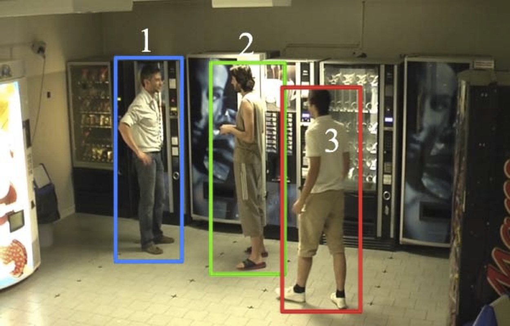
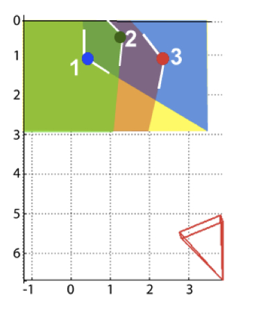
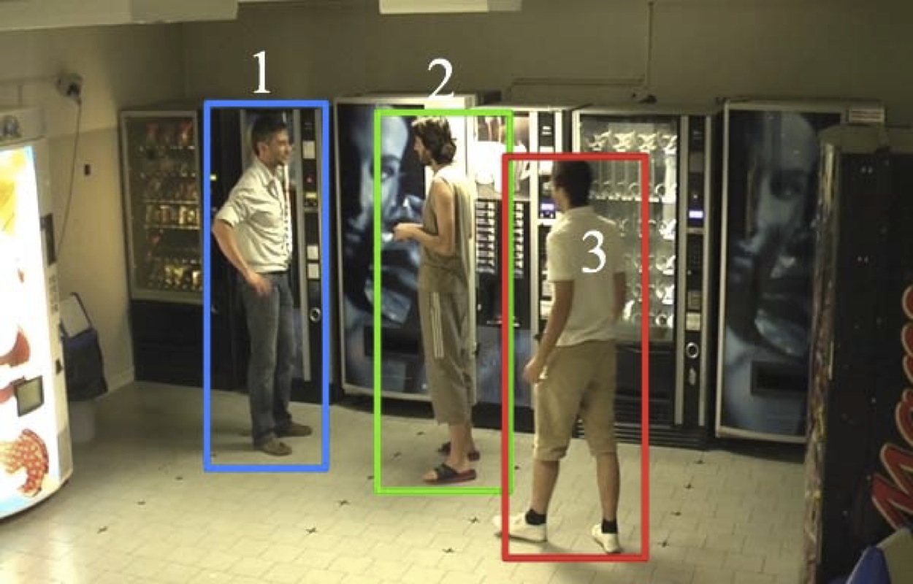
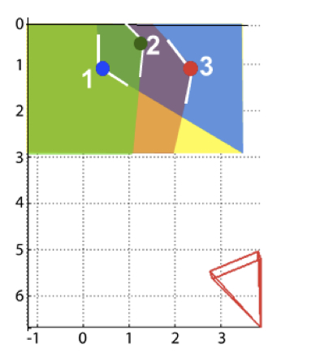

2D IRPM for group detection

Social interactions by visual focus of attention in a three-dimensional environment
L. Bazzani, D. Tosato, M. Cristani, M. Farenzena, G. Pagetti, G. Menegaz, and V. Murino
Expert Systems 2013
IRPM code / video / bibtex
L. Bazzani, D. Tosato, M. Cristani, M. Farenzena, G. Pagetti, G. Menegaz, and V. Murino
Expert Systems 2013
IRPM code / video / bibtex
Analyzing groups: a social signaling perspective
L. Bazzani, M. Cristani, G. Paggetti, D. Tosato, G. Menegaz, and V. Murino.
Video Analytics for Business Intelligence, 2012.
IRPM code / bibtex Cite one of these two papers if you use IRPM
L. Bazzani, M. Cristani, G. Paggetti, D. Tosato, G. Menegaz, and V. Murino.
Video Analytics for Business Intelligence, 2012.
IRPM code / bibtex Cite one of these two papers if you use IRPM
Details
In human behavior analysis, the Visual Focus Of Attention (VFOA) of a person is a very important cue. VFOA detection is difficult, though, especially in a unconstrained and crowded environment, typical of video surveillance scenarios. We estimate the VFOA by defining the Subjective View Frustum, which approximates the visual field of a person in a 2D (ground floor) representation of the scene. This opens up to several intriguing behavioral investigations. In particular, we propose the Inter-Relation Pattern Matrix, that suggests possible social interactions between the people.
 
 